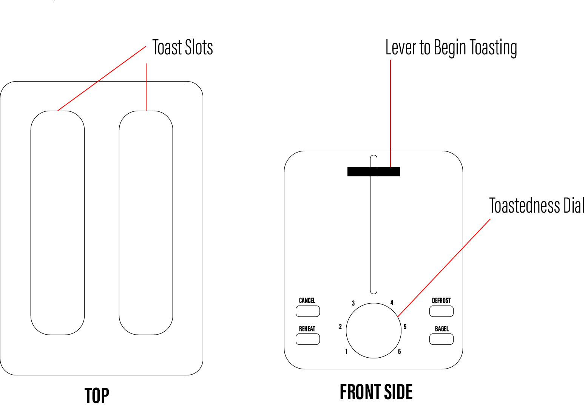
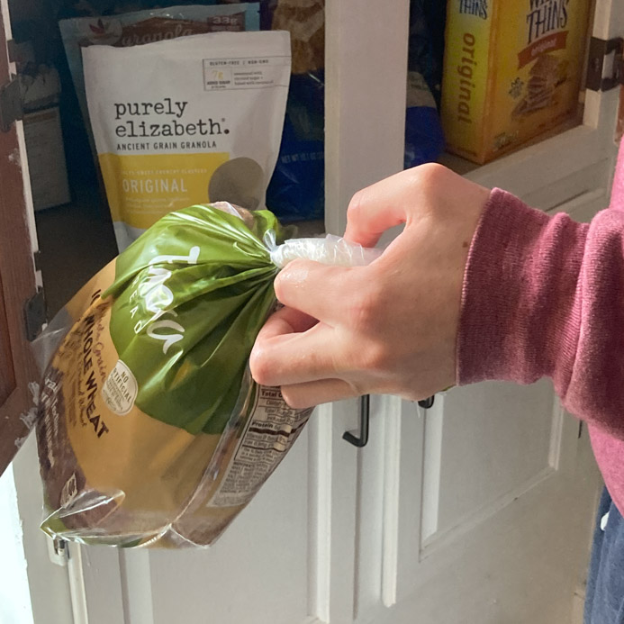
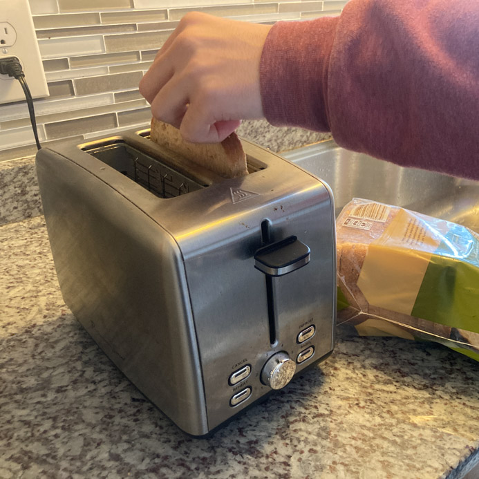
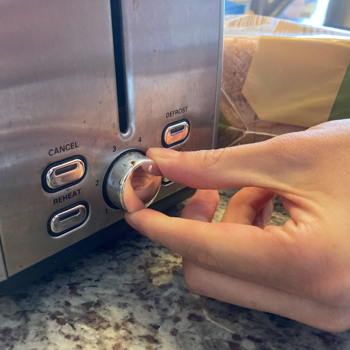
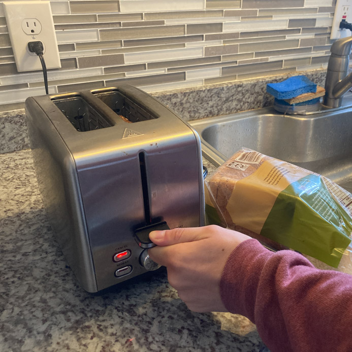
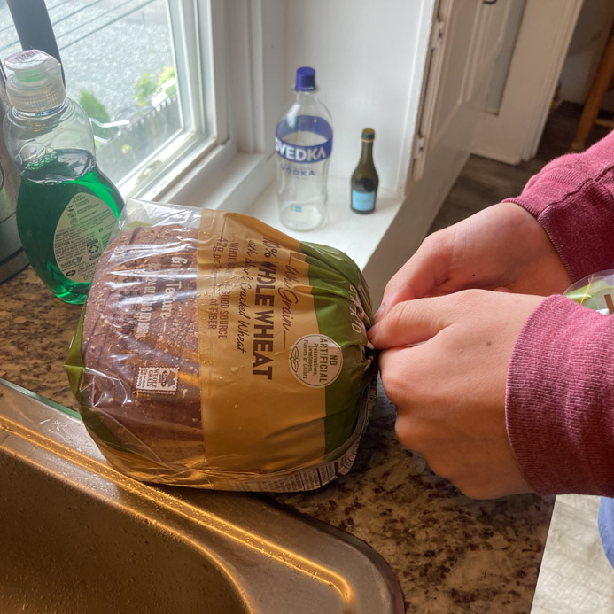
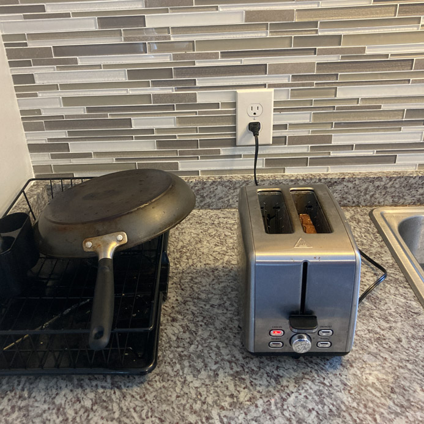
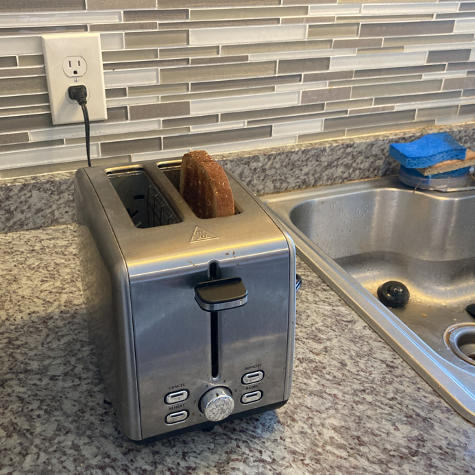
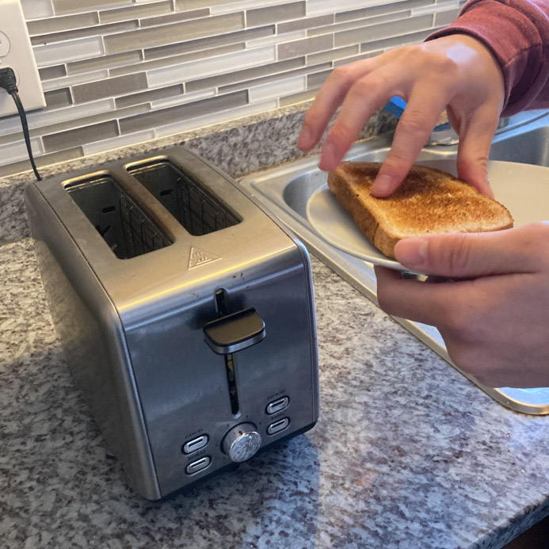

Interface
Below is a sketch of the toaster interface along with a descrption of the most important elements.

Interview
Questions and Summary Responses for Each User
How do you decide how toasted you want your bread to be?
- 1. “I usually don’t decide … I just use whatever toast setting was left previously on the dial.”
- 2. “I always set the dial to four, for every occasion.”
- 3. “It depends on how I am feeling - sometimes I set it to all the way dark if I want a crunchy piece, but if I’m making a sandwich I set it to the lowest. Every occasion calls for a different toast setting.”
- Overview: Users vary greatly on how they like their bread toasted, with some not even caring.
What settings are the most important for you?
- 1. “I just like the big lever that puts the toast down. It feels great to move it and I know my bread is getting toasted once I do it.”
- 2. “I never have really thought about it - the toaster is kinda invisible to me in a way.”
- 3. “The bagel button is really important to me. It allows me to only cook the cut side of the bagel.”
- Overview: The bagel button and large lever were big hits for the users.
What do you do once the toast is finished?
- 1. “Once the toast is done (and I know when it is because I can hear it pop up) I just leave it in the toaster until my other food is done (eggs and such). I assume that the toaster keeps it more warm than on a plate.”
- 2. “I pick it up and throw it on the plate … pretty simple.”
- 3. “Depends on the type of bread - sometimes I bring it right to the stove and throw the eggs on top, other times it goes right on the plate where I can add peanut butter.”
- Overview: Some users like to keep the toast in the toaster after it is done to keep it warm.
Do you use the same settings for all bread types?
- 1. “Yeah, pretty much.”
- 2. “I use the bagel button when I throw in a bagel … not really sure what it does though.”
- 3. “As I said before, I am changing settings a lot depending on the bread type and what I’m cooking with the bread. The bagel button and the dial are all I need to get exactly what I want.”
- Overview: Users vary on how often they change the settings to tune in exactly what they want.
What do you do if the toast is not toasted enough?
- 1. “I just press down the lever again and wait. Sometimes I over-toast, but I still eat it.”
- 2. “I never really have this problem because I found a setting that always does me well. Sometimes when toasting a frozen bagel I run into issues, so I just double toast in this scenario.”
- 3. “Since I am changing settings so often, I don’t have a reliable number, so sometimes I definitely do under-toast. This can be frustrating because then I don’t know how long to put it in again to get the toast level I want. Sometimes I forget about the toast on the second round and it burns.”
- Overview: If users under toast their bread they usually throw it back in the toaster and hope for the best.
Personas
Persona #1 - Partciular Peder
Particular Peder is a busy senior in college studying philosophy. He is very particular about his words and his toast. He is always struggling to get the right toast level, especially because he
often changes bread types, from bagels to baguettes. He represents the pool of users because he shares the common sentiment that getting the right toast level is important, but not easy to master.
Thinks
- I hope this setting works out.
- I wonder if 3 or 4 would be better for this slice of bread?
- I have to remember this setting! This toast is perfect.
Says
- "Lets go! This is a perfect piece of toast right here."
- "Ugh, it’s under toasted."
- "What settings do you usually use?"
Feels
- Anxious to start his day, but also anxious to get his toast right.
- Focused on all the settings.
- Curious what some of the buttons do.
Does
- Carefully examines the toast every time he finishes toasting.
- Sometimes inserts the toast again if it is under-toasted.
- Always uses the bagel button if toasting a bagel.
Persona #2 - Chill Charlie
Chill Charlie just graduated college and is hanging around looking for work at local coffee shops. He wakes up later than Particular Peder and usually is pretty tired when making his toast.
Charlie just wants to click a button and be done.
Chill Charlie represents the more laid back users who are a little carless about their toast and just want to have a peaceful morning without much thought.
Thinks
- I wish my coffee and toast would magically appear on the table every morning.
- This toaster is mad slow, but who cares?
- Looks good enough for me.
Says
- “I could press that toast button the rest of my life - so satisfying.”
- “Don’t you love when it pops up? So exciting man.”
- "Time to eat."
Feels
- Tired from too much sleep.
- Relaxed about the toast results.
- Excited, in a chill way, to eat some peanut butter toast with his coffee.
Does
- Starts toasting without looking at the settings.
- Never uses the bagel button - all bread types deserve the same treatment.
- Never re-toasts. He gets what he gets.
Storyboard
Chill Charlie makes some toast.
1

Chill Charlie gets sliced bread from the cabinet.
2

He isn't that hungry, so he throws only one piece into the toaster.
3

Charlie always sets the dial to level four before he starts toasting.
4

He presses down the toasting lever, turning on the red toasting light.
5

While waiting for the toast, Charlie ties the bread up and puts it back in the cabinet.
6

And now, Charlie patiently waits. He is in no rush.
7

The toast pops up! Charlie notices the sound and grabs a plate.
8

Charlie grabs the toast with his hands and puts it right on the plate. He is all done!
Conclusion
A toaster is a simple yet important interface. Through storyboarding and persona creation, I came to two
essential conclusions about toaster designs. First, a good toaster must accomodate for both toast aficionado's and
those who want a lazy morning. The toaster I looked at in this project was simple to use, without sacrificing precision. Second, I learned that a good toaster
should give strong tactical feedback. The users I interviewed were especially fond of the push down lever which assured them that the bread was being toasted.